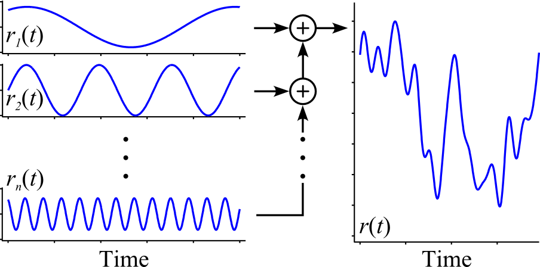

In manual tracking experiments, the target's motion is prescribed by a forcing function. This function should appear random to prevent the operator from predicting future behavior of the target, unless the real-world control task consists of highly predictable signals. This library, and much of manual control theory, focuses on the tracking of unpredictable signals.

From past studies, it has been shown that the sum of 5 or more sine waves is unpredictable to human operators (McRuer et al., 1965). An example summed-sine forcing function is shown above. The individual sine waves on the left are combined to yield the more complicated function on the right.
This package only includes the summed sine wave signal, which is by far the most common signal used in manual tracking tasks. Frequency values can be either in units of Hz (with SumOfSinesHz), or radians per second (with SumOfSinesRadPerSec). If the user wishes to make a custom forcing function for either the reference signal or disturbance input, the signal must be contained in one block with a single output, and it must be stored in the appropriate package. If these rules are violated, the Python functions will not be able to parse the text of the tracking task.